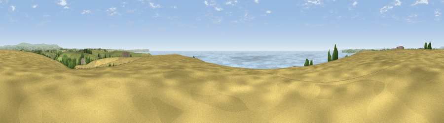

Viewpoint near Newton Ferrers
#1719 in England · top 4% of its area beats it · near Newton FerrersThe view, rendered

A 360° render of this exact spot computed from the terrain model, tree cover and land cover — summer colours, afternoon light, calibrated against photographs of famous viewpoints. Real trees, hedges and buildings will differ in detail.
The panorama
Grey silhouette: terrain skyline in each direction (720 bearings, Earth curvature and refraction included). Dashed green: skyline with trees (+15 m) and buildings (+8 m) as obstacles. Blue strip: how far the ground is visible on each bearing.
Where the view opens
Wedge length = distance to the farthest visible ground on that bearing (vegetation-aware). Rings at 10, 25 and 50 km.
What fills the view
40% water · 30% cropland · 25% grassland · 4% woodland
Angular shares of the visible panorama (visual magnitude), not map area. Landscape diversity 0.53 (0–1 Shannon).
Key numbers
More beautiful places nearby
The staircase of upgrades: each row has a higher view potential than everything closer. Driving times are estimates from straight-line distance, calibrated against real road routing — check an actual route before setting out.
| Place | Direction | Drive | Score |
|---|---|---|---|
| Viewpoint near Newton Ferrers | WNW · 1 km | ~4 min | 78.2 |
| Viewpoint near Newton Ferrers | E · 3 km | ~8 min | 79.5 |
| Viewpoint near Cawsand | W · 12 km | ~22 min | 81.0 |
| Western Beacon | NE · 16 km | ~28 min | 81.9 |
| Viewpoint near Lee Moor | N · 16 km | ~28 min | 82.7 |
| Viewpoint near Hope | ESE · 16 km | ~28 min | 84.4 |
| Viewpoint near East Prawle | ESE · 25 km | ~41 min | 84.6 |
| Pencarrow Head | W · 39 km | ~58 min | 86.0 |
50.30147, -4.05071 · source: screening · position refined by local search. Computed location — check access rights before visiting.